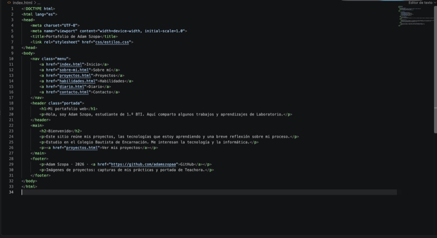
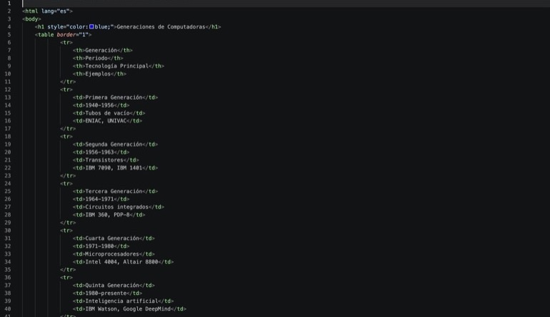

Portafolio web
Página personal hecha con HTML y CSS para organizar mi información y trabajos.

Página personal hecha con HTML y CSS para organizar mi información y trabajos.

Tabla HTML que organiza periodos, tecnologías principales y ejemplos de cada generación.
Proyecto de tecnología educativa en el que participé y que reúne ideas para apoyar el aprendizaje.